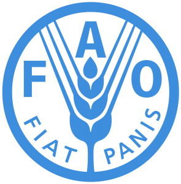
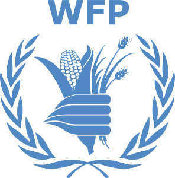

UN Report: World Hunger Still “Deeply Entrenched”
The Food and Agriculture Organization of the United Nations issued a report on the state of food security and nutrition in the world.According to current estimates, nearly 690 million people are hungry, accounting for 8.9% of the world’s total population.This is an increase of 10 million in one year, and an increase of nearly 60 million in five years.
On Monday, the FAO of the United Nations, headquartered in Rome, Italy, in conjunction with the International Fund for Agricultural Development, the United Nations Children’s Fund, the World Food Programme, and the World Health Organization released the 'Report on the State of Food Security and Nutrition in the World 2020.'
'We cannot continue thinking of agriculture, the environment, health, poverty and hunger in isolation,' IFAD President Gilbert F. Houngbo said at the virtual launch.'World problems are interconnected, and the solutions are intertwined.The current pandemic is a wake-up call to all of us.'
WHO Director-General Tedros Adhanom Ghebreyesus said that 'while it is too soon to assess the full impact of COVID-19, the report estimates that 130 million more people may face chronic hunger by the end of this year.'
The report pointed out that due to the impact of the new coronavirus epidemic on health and social economy, the food security and nutritional status of most vulnerable groups are likely to deteriorate further.
Preliminary assessments indicate that the 2019 new coronavirus pandemic may cause the number of undernourished people in the world to increase by 83 million, to 132 million in 2020, depending on economic growth prospects.
FAO Director-General QU Dongyusaid, 'we need an urgent transformation of food systems to reduce cost of nutritious foods and increase affordability of healthy diets.'
In addition to the routine assessment of food security and nutritional status, the report also adds a forecast of the world’s prospects for 2030, assuming the trend has remained constant over the past decade.
The heads of the five institutions that issued the report pointed out that the goal of achieving zero hunger, ending food insecurity and various forms of malnutrition in 2030 is still far away.
'Despite COVID-19, conflicts, weather extremes and desert locusts,' WFP chief David Beasley stressed, 'we have enough wealth in the world to feed everybody.'And yet, the UN agency is 'scaling-up its scope from feeding 100 million to 130-140 million people,' he added.
From the perspective of the proportion of malnourished people, the regions hardest hit by hunger are Africa (19.1%), Asia (8.3%) and Latin America and the Caribbean (7.4%).The report also shows that the burden of various forms of malnutrition remains a challenge.
Although some progress has been made in child developmental delay, low birth weight, and exclusive breastfeeding, progress is still too slow.In all regions of the world, the problem of children’s overweight has not been improved, and the problem of adult obesity continues to increase.
FAO calls on countries in the world to realize the transformation of the food system and ensure an economical and healthy diet.
[bsa_pro_ad_space id=4]
Share on Facebook Tweet Follow us
Posted On: 2020-07-14T00:00:00
Posted By: Doris Mkwaya





Content Date: 2020-07-14
Download Date: 2021-07-09
Document ID: L0C04ERYB